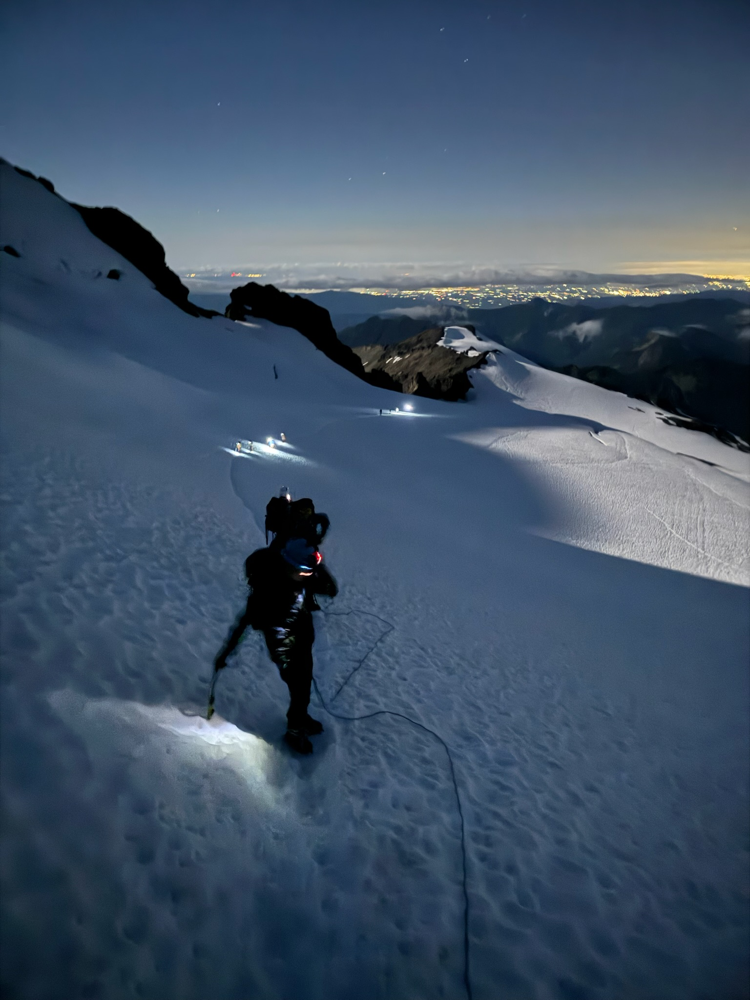
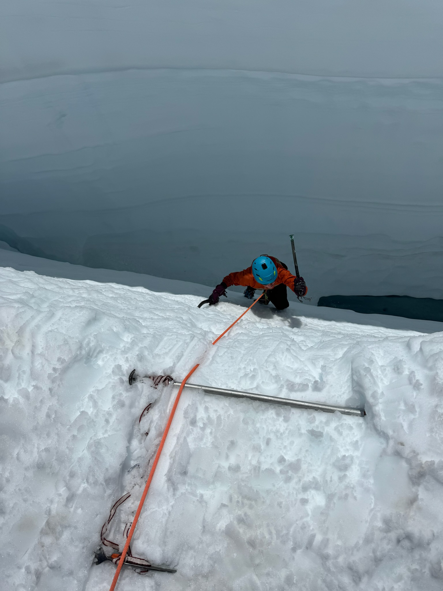
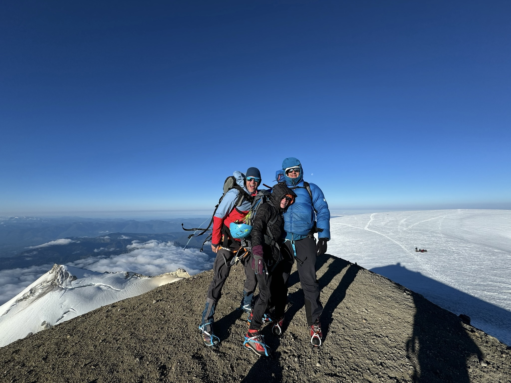
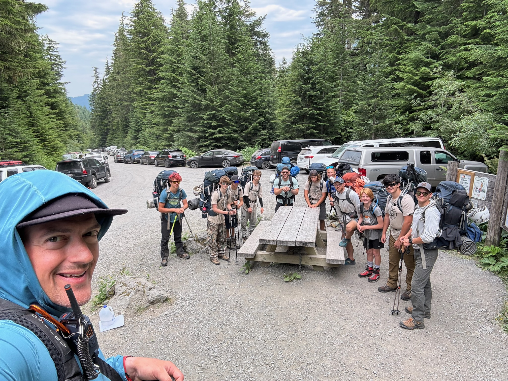
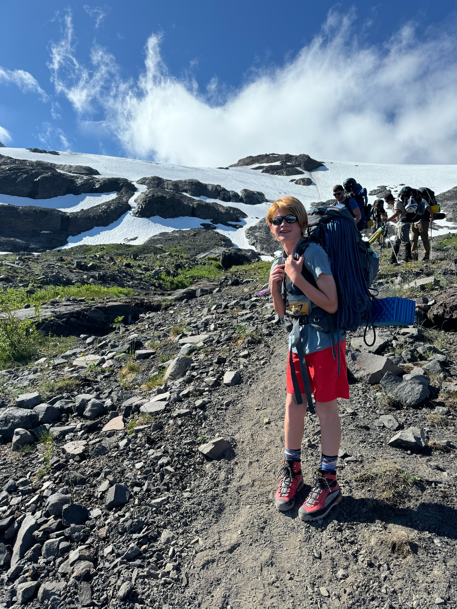

Adventure Gallery
Every adventure tells a story. These moments represent my passion for exploring the outdoors through mountaineering, mountain biking, hiking, backpacking, and photography.





Outdoor Athlete • Adventure Creator • Mountain Biker • Mountaineer
Explore My AdventuresFrom a young age, the outdoors has been where I feel most at home. Whether I'm mountaineering, mountain biking, hiking, or backpacking, I'm always looking for opportunities to challenge myself and experience new places. My goal is to inspire others through authentic outdoor content while building meaningful partnerships with brands that value adventure, exploration, and the outdoors.
Every adventure tells a story. These moments represent my passion for exploring the outdoors through mountaineering, mountain biking, hiking, backpacking, and photography.



Mountain biking pushes me to improve every ride while exploring incredible trails and landscapes. Whether racing, riding with friends, or discovering new terrain, every ride strengthens my passion for adventure and the outdoors.
Reaching mountain summits requires preparation, perseverance, and teamwork. Mountaineering has become one of my greatest passions because every climb teaches new skills while rewarding me with unforgettable experiences.
Whether spending nights in the backcountry or relaxing in a hammock after a long hike, backpacking allows me to disconnect from everyday life and reconnect with nature.
Follow my outdoor adventures through mountain biking, mountaineering, hiking, backpacking, and photography as I continue exploring new places and sharing authentic experiences.
A collection of my favorite moments from mountaineering, hiking, biking, backpacking, and exploring the outdoors.


